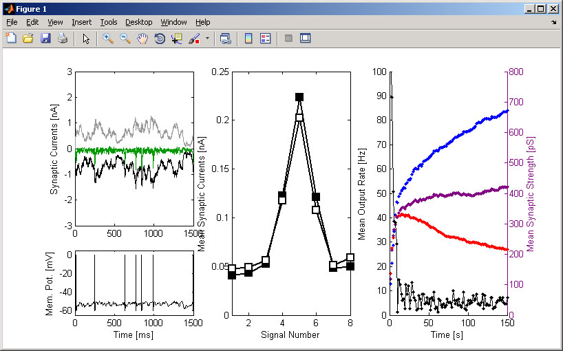
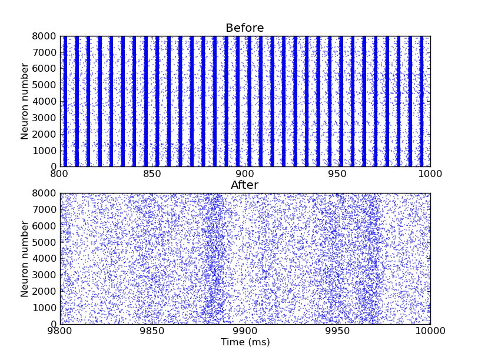

This is the readme for the code associated with the paper Vogels TP, Sprekeler H, Zenke F, Clopath C, Gerstner W (2011) Inhibitory plasticity balances excitation and inhibition in sensory pathways and memory networks. Science 334:1569-73 This matlab code was included in the supplementary online material at the Science journal website. To run start matlab and cd to the folder extracted from this archive. Type "inhib_plasticity" in the matlab command line and you should see the figure generating from the supplementary pdf:  This archive also includes the authors matlab code (InputCurrents.m) that makes the inputs separately as well as a Brian file (isp_brian.py) (for Brian 1.3.0, not working with earlier versions) (and a screenshot of the figure it produces) that runs the network simulation:  20120307 line 71 in inhib_plasticity.m had round() added to it - T Vogels.